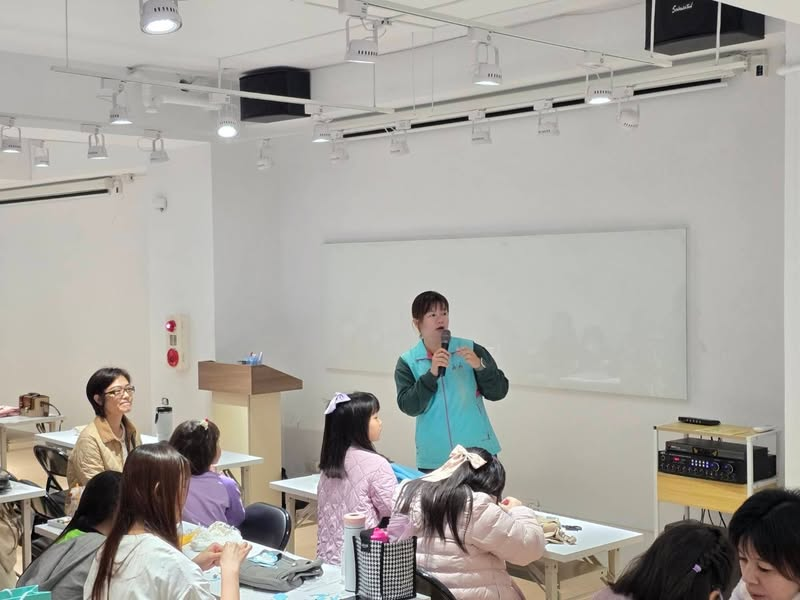
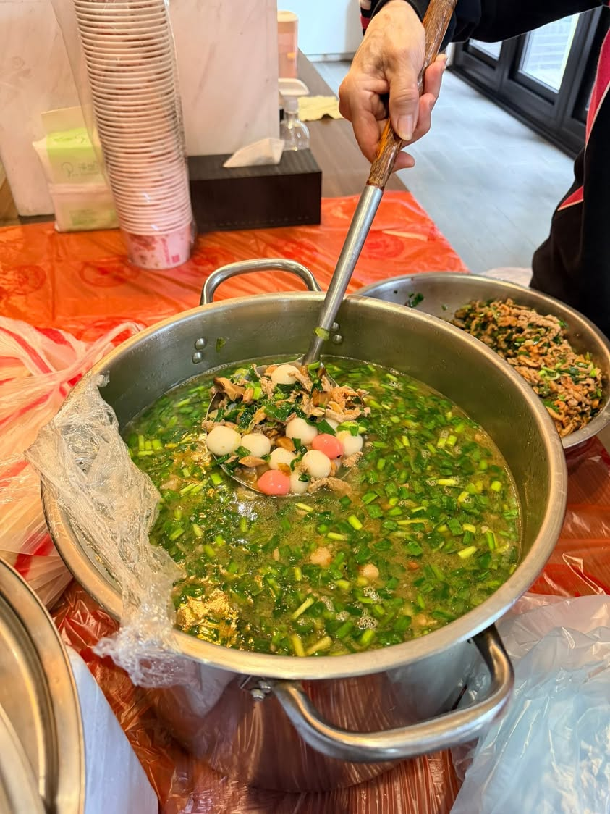
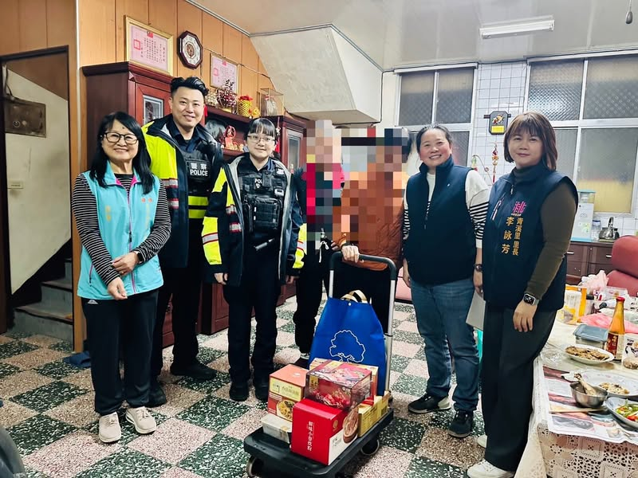
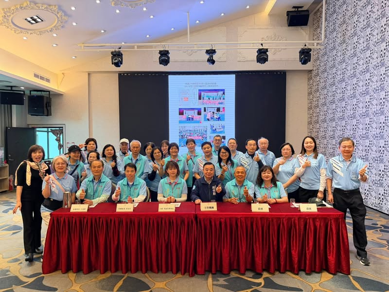
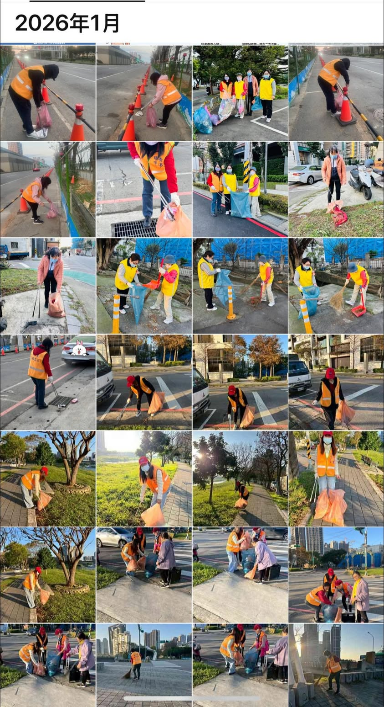
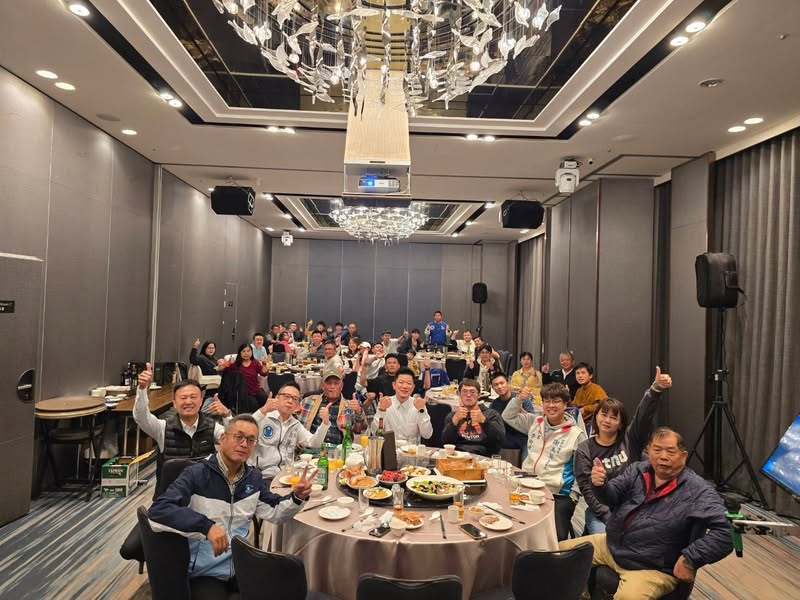
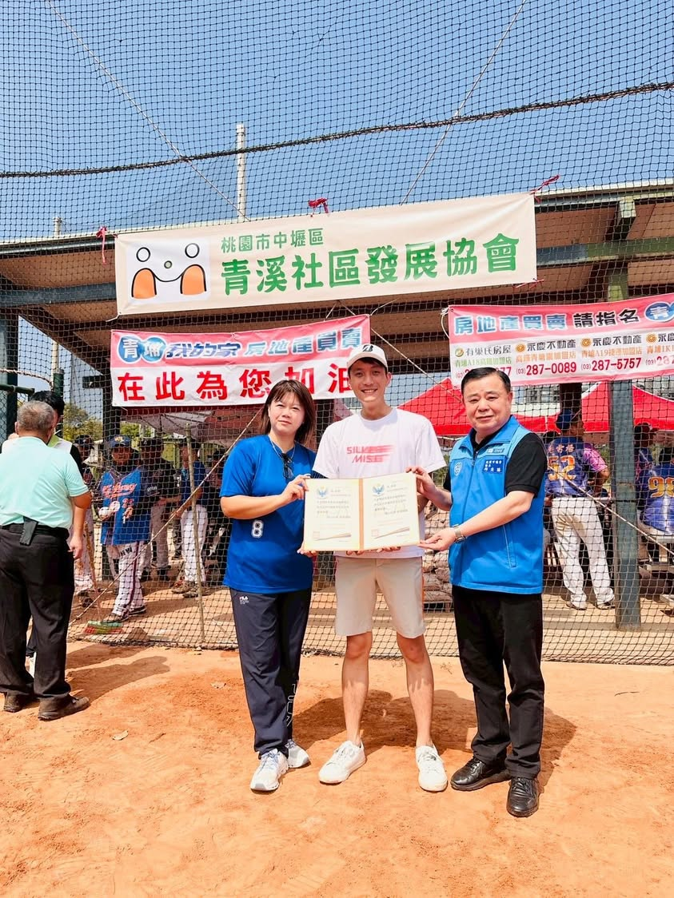
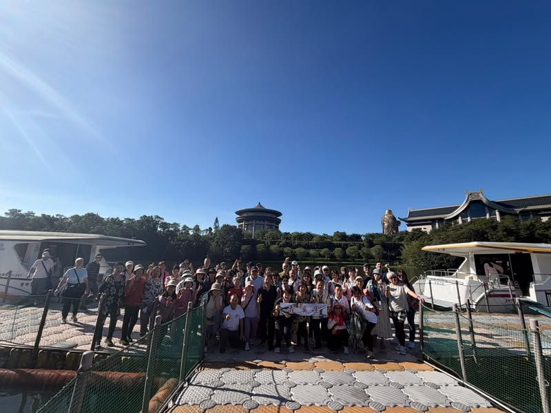
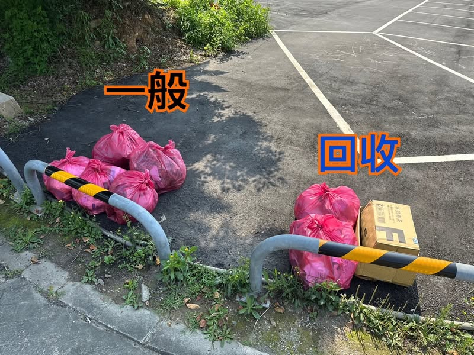

長者關懷
帶長者出遊——和逸飯店 DIY ＋ Xpark 水族館
和總幹事夫妻聊天時，他們提到在社區生活了三、四十年，看著很多長輩慢慢變老，問了一句：「是不是可以帶長者們出去走走？」一句話像一顆種子。里長四處呼朋引伴，感謝「踏體粗」好友們無私協助專車接送，讓許多平常很少出門的長輩都能放心一起出門。

冬至親子活動——分享青溪里 LOGO 設計理念
桃園市中壢區青溪里 現任里長
「我在青溪里服務，最重視的是居民的日常需求：環境整潔、路燈安全、活動辦理、弱勢關懷與即時回應。希望讓每位里民在需要幫助時，都知道可以找到人、找到方法、找到結果。」
選上里長後的第一要務是把里辦公處大門打開，讓里民有需要時都能找到人。以「快速回應、主動關心、透明處理」為原則，不論是環境維護、長者關懷、還是社區營造，都希望做到讓每位里民安心、放心。
「有些事情看起來很小，但做了之後心裡會很暖。」
「因為看見，所以留下；因為在乎，所以努力把這條路走得更通透。」
和總幹事夫妻聊天時，他們提到在社區生活了三、四十年，看著很多長輩慢慢變老，問了一句：「是不是可以帶長者們出去走走？」一句話像一顆種子。里長四處呼朋引伴，感謝「踏體粗」好友們無私協助專車接送，讓許多平常很少出門的長輩都能放心一起出門。

今年元宵節，社區再次與里辦攜手合作。從最原始的材料開始，磨米、和粉、塑形到現場熬煮湯頭，由專業客家媳婦團隊親力親為。現場氣氛出乎意料地熱絡，很多住戶邊做邊聊，一顆一顆慢慢揉、慢慢戳，大家的心也在這過程中慢慢柔軟下來。

延續與慈濟的約定，把感動化為行動。今年再次攜手，也邀請青埔派出所一同加入，把物資與關懷親手送到長者身邊。願這些在歲月中辛苦走過的長輩們，在寒冷的冬天裡，都能感受到來自社區的溫暖。

協會成立即將屆滿兩年。從成立慢壘隊、舉辦第一屆青溪盃錦標賽，到持續推動社會課程與社區交流行動，透過寒冬送暖、節慶活動、手作課程與多元生活講座，為里民打造相聚交流的舞台，逐步走進社區、走近人心。

青溪里的每一位環保志工，都把對這片土地的愛默默放進每一個行動裡。冷冽的天氣、刺骨的水，他們依然捲起袖子，下水撈起浮萍；甚至自掏腰包添購爪耙子，只為讓環境更好一點。青溪里擁有的美好環境，榮耀永遠屬於這群默默付出的志工們。
感謝游總幹事與關懷協會的用心規劃。一起分享冬至的由來，也聊了青溪 LOGO 的設計理念——陪伴、連結，還有慢慢走在一起的力量。最感動的是孩子們的創意，沒有標準答案、沒有比較。壓軸登場的是溫暖的牛汶水。因為有你們，青溪不只是一個地方，而是一個正在發生的「家」。

感謝球員們把冠軍盃留在青溪里！大家真正記住了——「青溪不只是社區，而是青溪里」。青溪里的名字，從過去的「蟬聯三年中位數所得最高的里」，進化到現在：有一支很強的慢壘球隊。讓青溪里不只代表「財富自由」，更象徵「健康」、「樂活」、「團結」。

感謝多位民意代表與區長的親臨支持，也特別感謝用心籌辦賽事的淳逸隊長及家人。在球場上發現在地銀行經理也是球員，還有許久未見的老師同場競技。這場比賽不只連結社區，更讓人感受到——運動不是唯一，而是第一！

感謝志工們平時的辛勞，難得放下掃把與夾子，一起踏上中部小旅行。一車是「文青組」靜靜欣賞電影，二車則是「搖滾組」一路高歌歡笑。一整天滿滿的笑聲與回憶，最棒的 Happy Ending！

昇恆昌免稅店團隊主動接洽里辦發起青塘園環境整理活動。志工們頂著陽光，積極清掃園區與周邊街道，甚至合力清除水池邊垃圾。這是青溪里首次與企業攜手合作，讓我們看見企業對社區的關懷與實際付出。
事件：里內發生火災
處理：里民第一時間透過 LINE 通知里長，里長趕赴現場協助、確認傷亡
結果：無人員傷亡，配合消防作業順利完成
目標：維護青溪里整體環境品質
做法：志工自主巡檢、下水清除浮萍、自掏腰包添購工具
成果：環境維護持續獲里民肯定
目標：強化社區防災應變能力
做法：里長主動向區長爭取防災士課程，學習災害潛勢分析與應變流程
成果：完成培訓，建立社區防災組織架構
目標：推廣全民運動、連結社區
做法：籌辦青溪盃慢速壘球錦標賽
成果：首屆辦理成功，青溪隊勇奪冠軍
需求：學校空間不足，晨間故事媽媽無備課場地
做法：選上里長後第一件事，打開里辦公處大門讓志工使用
成果：參與人數持續增加，已擴展至社區合作場地
起因：昇恆昌免稅店主動接洽里辦
做法：企業志工清掃園區、清除水池邊垃圾
成果：青溪里首次企業合作，青塘園煥然一新
李詠芳
320 桃園市中壢區文昌路225巷28弄19號
週一至週五 08:00–17:00
（實際時間請以里辦公處公告為準）
Facebook：李詠芳（cocolee58）
LINE / 其他社群連結（如有請補充）
緊急事件請直接電話聯繫，勿僅透過網路留言。